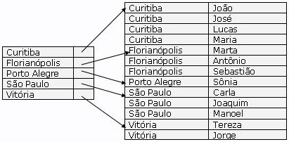
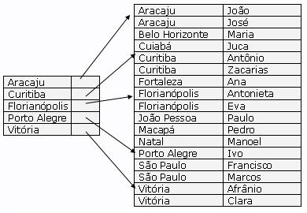
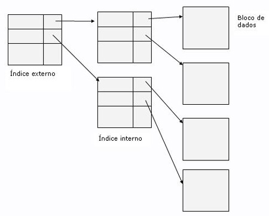
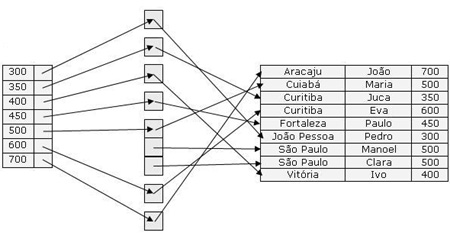

Daniel Oslei Quarta-feira, 24 de março de 2004 Índices Olá pessoal. Desculpem pela demora na edição de um novo artigo para a Coluna PostgreSQL iMasters. No primeiro artigo, anunciei que a Coluna PostgreSQL não tratará apenas de assuntos específicos desse SGBD, mas também de conceitos de bancos de dados, e é isso que ocorrerá neste primeiro artigo sobre índices. PostgreSQL ficará um pouco de lado, para que tratemos de uma breve introdução sobre o que são índices. No próximo artigo trataremos mais especificamente os índices no PostgreSQL. Em grande parte das consultas que são feitas a uma base de dados, fazem referência a apenas uma pequena proporção dos registros de um arquivo. Por exemplo, numa base de dados de uma grande empresa podem ser feitas muito mais consultas para se saber os clientes que moram na cidade de Curitiba do que consultas para saber quem são os clientes de Porto Alegre. E dentro das pesquisas dos clientes curitibanos, podem haver muito mais pesquisas em relação a quem mora em um determinado bairro do que em outros. Esses são exemplos bem simples de como determinadas consultas são feitas repetidamente e várias vezes ao dia. Mas imaginem se o SGBD para fazer essas consultas tenha que analisar registro por registro para poder retornar um resultado. Se a quantidade de registros for pouca, isso será imperceptível. Mas se pelo contrário, existirem um enorme número de linhas em várias tabelas, com várias chaves estrangeiras, começaram a surgir graves problemas de desempenho no sistema. Por isso, é necessária a criação de estruturas para que as consultas sejam executadas na melhor performance possível. Muitas vezes, quando consultamos um livro, não podemos lê-lo todo para encontrarmos o que procuramos. Se for deste modo há um tempo muito grande sendo desperdiçado. Para isso que existe nos livro os índices, no qual podemos encontrar com mais facilidade o que desejamos. Da mesma maneira, os bancos de dados utilizam índices, para que não só consultas, mas inserções, exclusões e atualizações sejam feitas com mais agilidade. Habitualmente, os índices são utilizados para melhorar o desempenho dos bancos de dados. Um índice permite ao servidor de banco de dados encontrar e trazer linhas específicas com muito mais rapidez do que faria sem o índice. Mas os índices também produzem trabalho adicional para o sistema de banco de dados como um todo, portanto, deve-se adquirir bons conhecimentos sobre o assunto para o seu devido uso. Os índices podem beneficiar as atualizações e as exclusões com condição de procura. Eles também podem ser utilizados em consultas com junção. Portanto, um índice definido em uma coluna que faça parte da condição de junção pode acelerar, significativamente, a consulta. Um dos mais antigos esquemas de índice utilizados em sistema de banco de dados é chamado de arquivo indexado seqüencialmente, que são projetados para aplicações que requerem tanto o processamento seqüencial de um arquivo inteiro quanto o acesso aleatório a registros individuais. Num exemplo um pouco mais avançado, mostramos na imagem abaixo uma tabela na qual os registros são indexados pelo nome da cidade em que moram os clientes. Para encontrarmos os clientes de uma determinada cidade, encontramos a cidade na primeira tabela e seguimos para onde o ponteiro correspondente está apontando, lendo seqüencialmente até encontrar uma cidade diferente da solicitada:  Reparem que neste exemplo, para cada cidade existe um registro de índice (ou entrada de índice), mesmo que haja apenas um registro para determinada cidade. Este tipo de colocação de índices é chamado de índices densos. Existe uma outra forma de índice conhecida como índices esparsos. Veja o exemplo abaixo:  Neste exemplo, são criados registros de índices para apenas alguns dos valores. Para localizar um registro, encontramos a entrada de índice com o maior valor de chave de procura que seja menor ou igual ao valor de chave de procura que estamos procurando. Iniciamos no registro apontando para a entrada de índice e seguimos os ponteiros no arquivo até encontrarmos o registro desejado. Os índices densos são preferíveis comparados aos índices esparsos, devido a possibilidade de encontrarmos com mais agilidade o desejado. A vantagem dos índices esparsos é o fato de ocuparem pouco espaço em disco e menos trabalho na manutenção em inserções e exclusões. Mesmo assim, se pensarmos em grandes fontes de armazenamento de dados, essa forma de índices tornaria o desempenho do banco extremamente baixo. Se um índice for suficientemente pequeno para ser mantido na memória principal, o tempo de busca para encontrar uma entrada será baixo. Entretanto, se o índice for tão grande que tenha de ser mantido em disco, a busca de uma entrada exigirá diversas leituras de blocos. Para solucionar este problema, o índice deve ser tratado como qualquer outro arquivo seqüencial, e construímos um índice esparso no índice primário:  Cada vez que ocorre uma inserção ou remoção de dados, os índices devem ser atualizados. Quando é inserida uma informação, se o índice for denso, é feito uma procura com o dado chave para o índice, se caso não for encontrado, esse valor é incluído no índice. Se o índice for esparso e armazenar uma entrada para cada bloco, não é necessário fazer nenhuma alteração no índice, exceto se um novo bloco tenha sido criado, então o primeiro valor de procura que aparece no novo bloco é inserido. Quando um registro é removido, se o registro for o único para o valor chave de procura, então esse valor chave é excluído do índice. Com índices esparsos, removemos uma valor de chave e substituímos sua entrada (se houver) no índice pelo próximo valor de chave de procura (na ordem da chave de procura). Se o próximo valor de chave de procura já tiver uma entrada de índice, a entrada é apagada em vez de ser substituída. São chamados de índices primários os índices que pertencem a uma chave primária ou a que definam a seqüência dos registros. Existem também os índices secundários, que normalmente pertencem a chaves candidatas. Os índices secundários são muito semelhantes aos índices densos, a não ser pelo fato de os registros apontados por valores sucessivos no índice não estão armazenados seqüencialmente, pois, os registros estão dispostos de tal forma a satisfazer a ordenação do índice primário, o que resulta no fato de os índices secundários terem que possuir ponteiros para todos os registros. Uma leitura seqüencial na ordem do índice primário é satisfatório, pois, os registros estão fisicamente armazenados na mesma ordem do índice primário, o que não acontece com os índices secundários. Como a ordem do índice primário e do secundário diferem, provalmente surgiriam complicações com a leitura através da ordem do índice secundário. Com índices secundários, os ponteiros não apontam diretamente para o arquivo com registros, mas para um bucket que contém ponteiros para o arquivo. Veja o exemplo abaixo:  O que foi mostrado acima, é apenas o príncipio de como os índices são feitos, para que servem e como funcionam. Existem algortimos muito mais avançados e complexos do que os já citados, e ainda existem muitos estudos em cima deste assunto, sempre na tentativa de fazer com que os índices sejam mais eficientes, exigindo menos processamento, otimização do espaço em disco e exijam menos manutenção. O PostgreSQL implementa quatro tipos de índices: B-Tree, R-Tree, GiST e Hash. Cada um com o seu grau de eficiência, podendo ser recomendado algum deles para uma determinada aplicação e outros para outros tipos de aplicações. Veremos na parte II de nosso artigo, como funciona cada um deles e para o que são recomendados. Na parte III, veremos detalhadamente como são usados. |